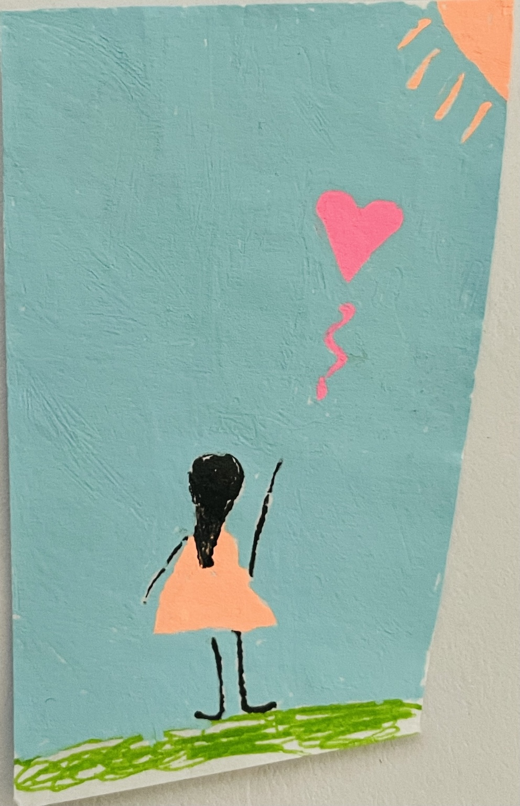

mARTa

This space is born from love, devotion, and an eternal bond.

 It is dedicated to my sweet, blissful, strong-minded, and deeply artistic daughter, Martha — eternally 8 years old. She left behind a world of inspiration which lives on in every piece I create.
It is dedicated to my sweet, blissful, strong-minded, and deeply artistic daughter, Martha — eternally 8 years old. She left behind a world of inspiration which lives on in every piece I create.
Her sense of color, shape, and beauty ran deep. Her drawings, her crafts, her playful eye – all were inimitable. Yet I dare and try, with her spirit in mind.
This space isn’t about perfection. It’s about imagination, joy and simple forms that radiate warmth, color and comfort. It’s a little handmade world, simple and sincere, that speaks to anyone who still carries that childlike sense of wonder.
My hope is to create decorations that evoke new sensations, yet take you back – to joy, to memories, to that carefree feeling. I hope what you find here can enlighten and enrich your eyesight, bring warmth to your heart and rekindle memories.